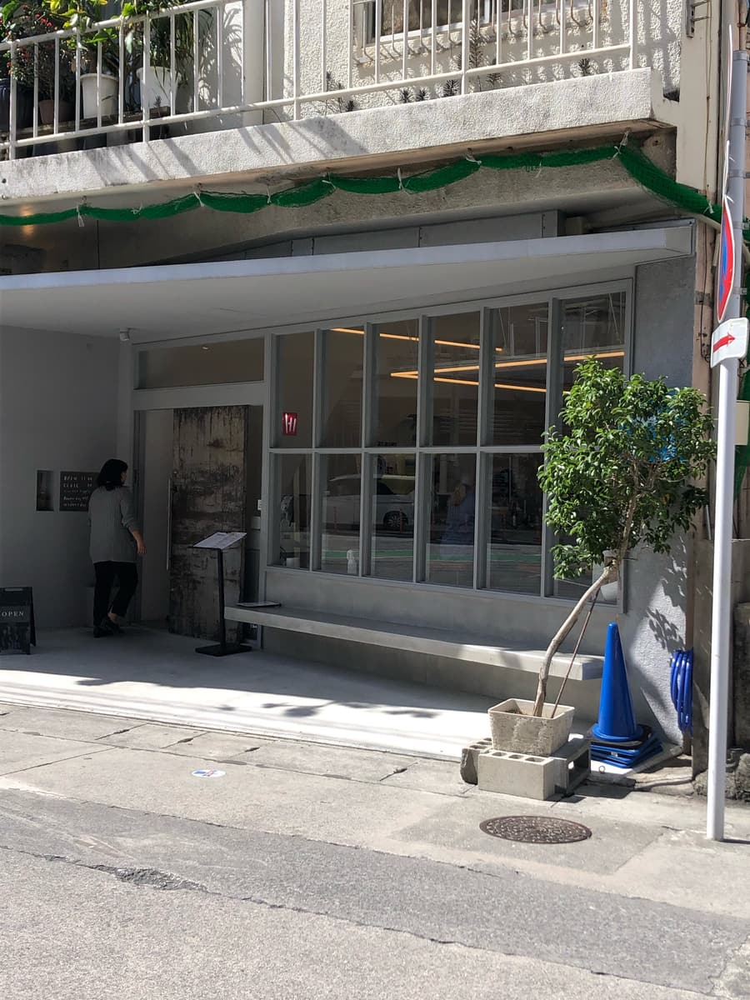
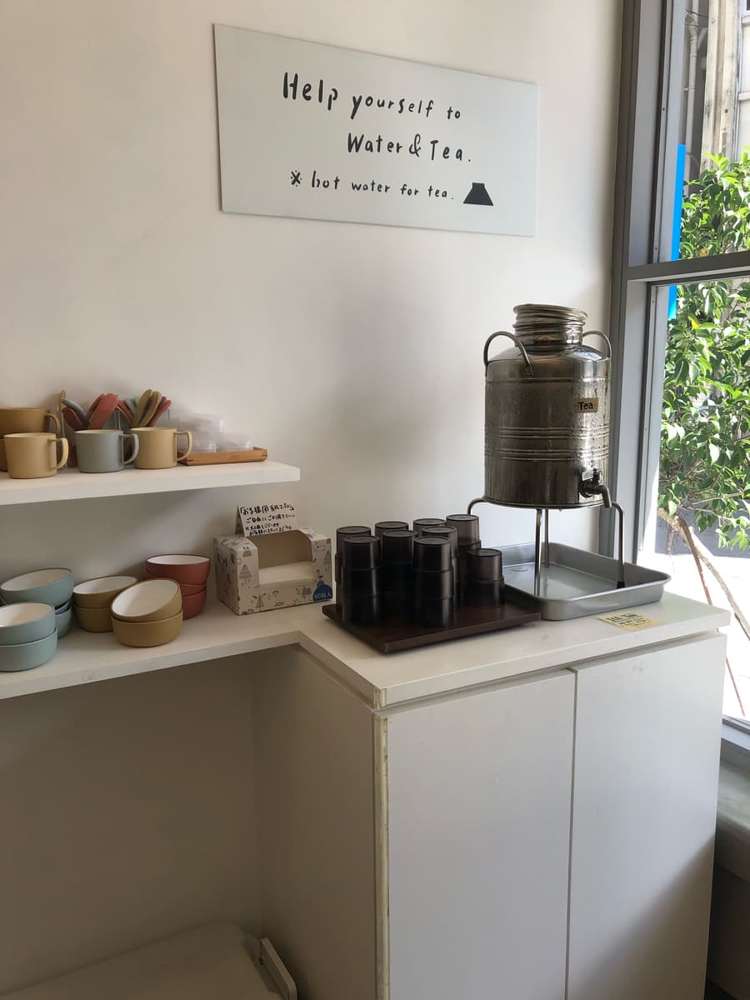
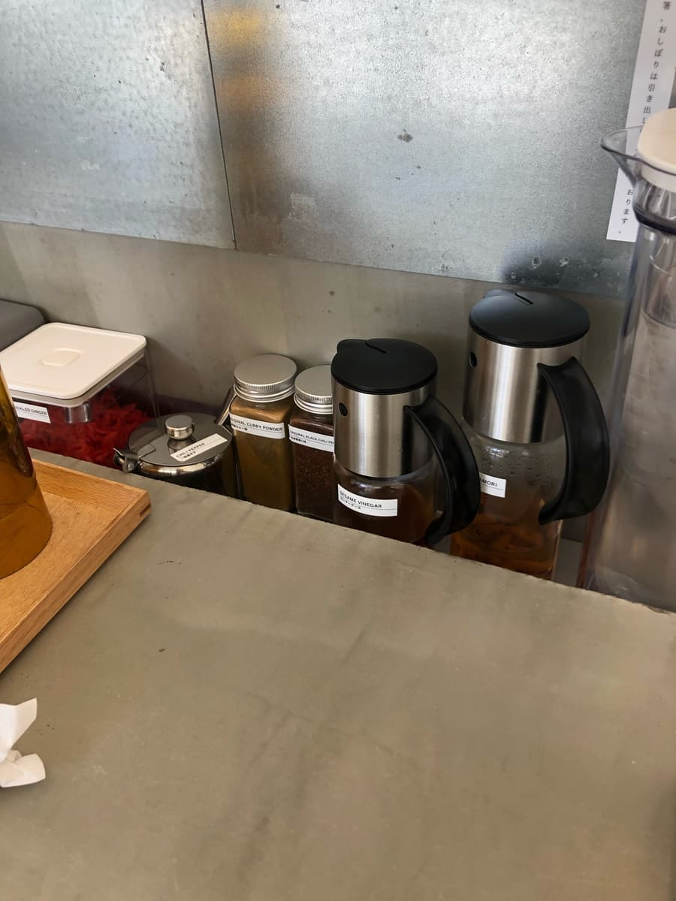
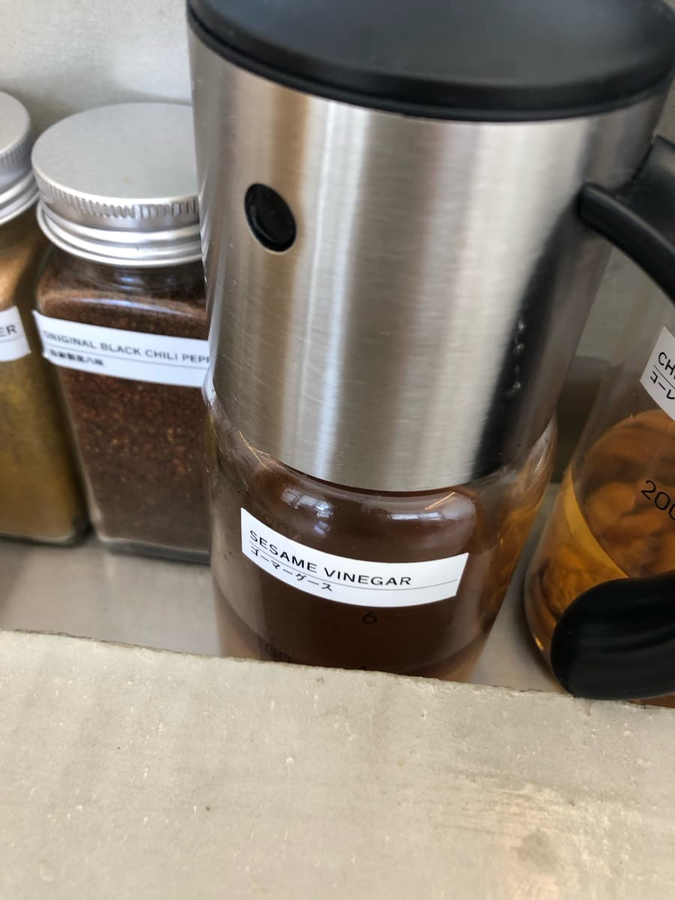
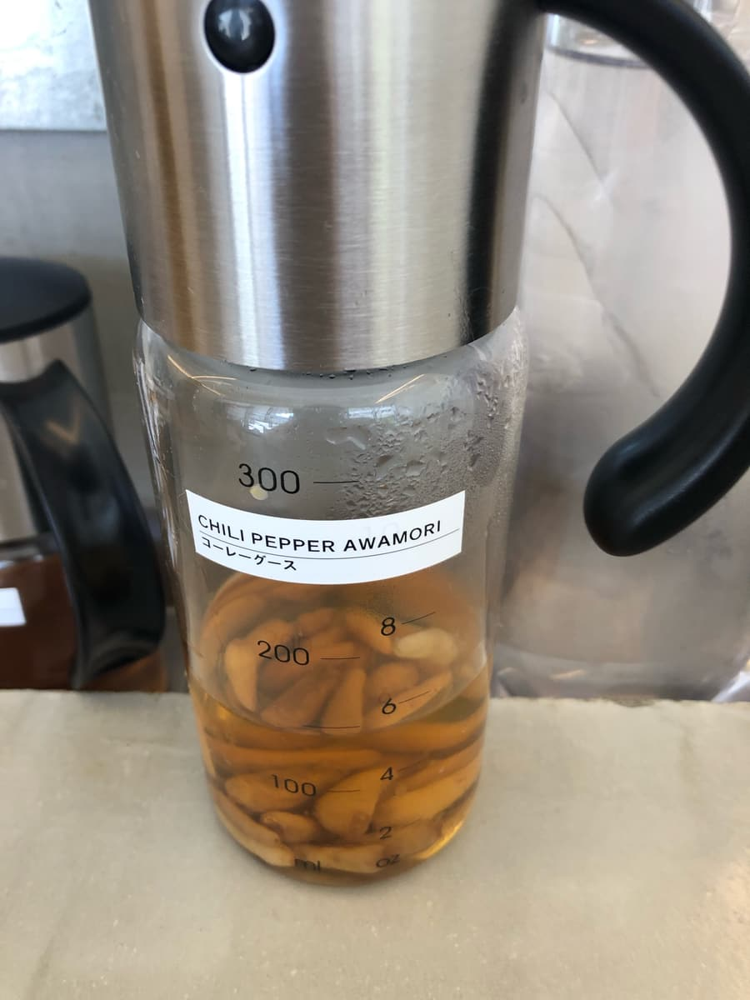
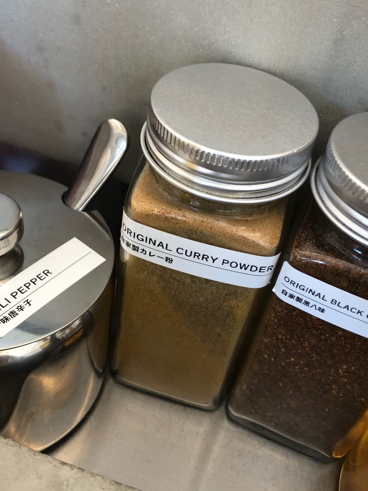
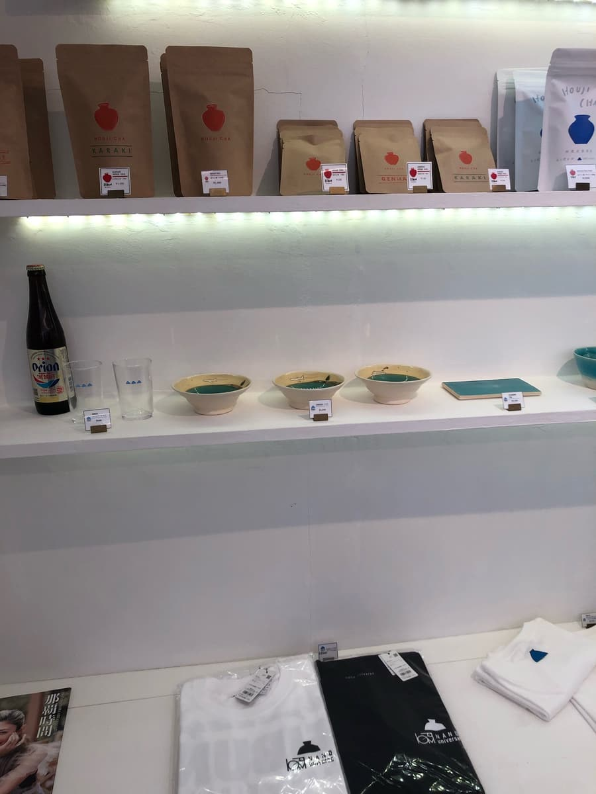
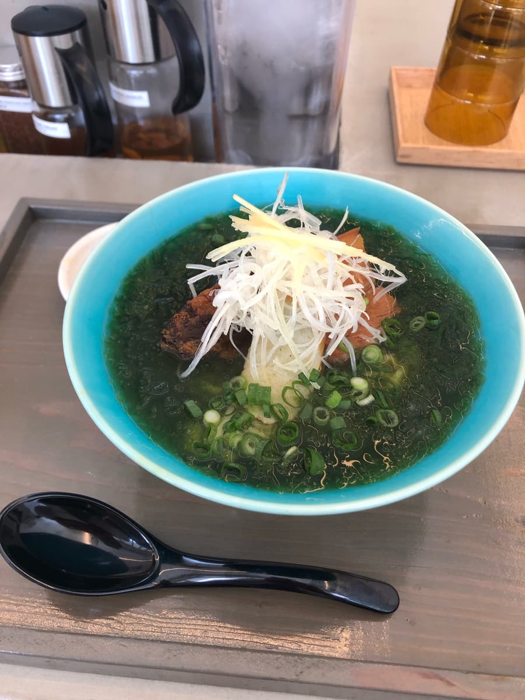
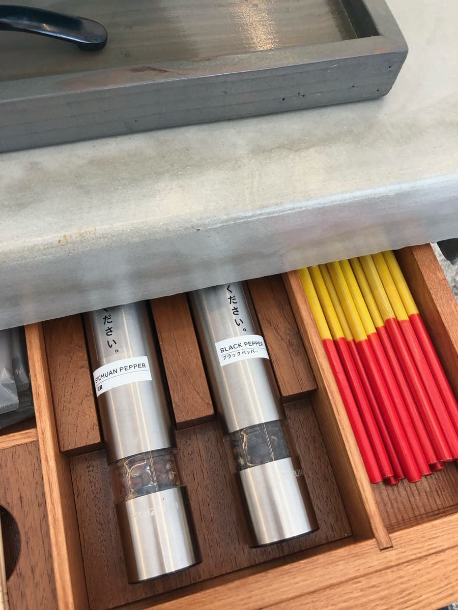
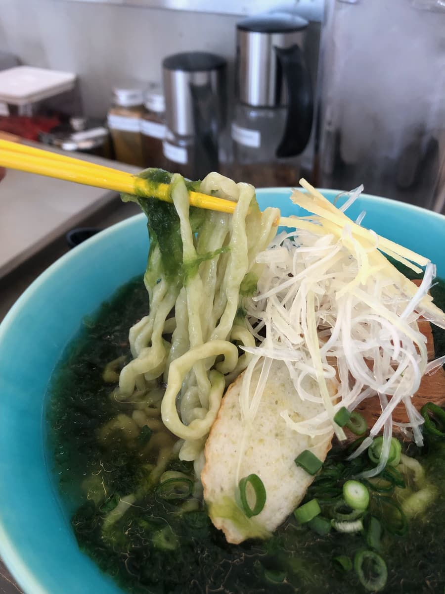

지금까지 먹어 온 오키나와 소바 가게 중에서 가장 맛있다고 생각하는 “EIBUN”인데, 2023년 4월? 무렵에 2호점을 냈다는 걸 최근에 알고 2024년 2월에 먹으러 갔습니다😁

이 2호점, 본점과 엄청 가까운 곳에 있었습니다(^0^;)
게다가 얼마 전 제13회 스탬프 랠리에서 6번째 가게/34개 가게로 방문했던 “오키나와 포크 소바”의 옆의 옆이었습니다(^0^;) 여전히 노 리서치로 발길 닿는 대로 다니고 있어서 몰랐습니다(^0^;)
더 놀란 건, 이날도 본점은 여전히 줄이 길어서 좀처럼 편하게 들를 수 없는 느낌인데, 2호점은 딱히 줄이 없었습니다. 입구 앞에 서 있으니 점원분이 “들어오세요” 하고 안내해 주었습니다.
본점과 2호점은 손님 수가 전혀 다르네요.
가게 안에 들어가면 식권 발매기가 설치되어 있어서 메뉴를 주문. 분명 본점은 캐시리스 결제가 됐던 것 같은데, 여기는 아쉽게도 현금만 되는 것 같습니다. 식권 발매기도 새로운 타입이니까 앞으로 캐시리스에도 대응해 주면 좋겠네요.
식권 발매기 앞에서 점원분이 메뉴를 설명해 주면서 “파래(아사) 소바가 가장 인기”라는 식으로 설명해 주셔서 이번에는 “파래(아사) 소바”를 주문하기로 했습니다😁
카운터석으로 안내받고, 기다리는 동안 세련된 가게 안을 두리번두리번😄






가게 안을 관찰하는 사이에 “파래(아사) 소바”가 나왔습니다. 맛있어 보입니다😋

파란색 그릇은 본점 “EIBUN”과 같네요😄 바로 국물을 맛보려고 했는데, 젓가락이 없다?
테이블 위에 젓가락이 없어서 “어라? 점원이 깜빡했나?” 싶어 젓가락이 있는지 물어봤더니 “서랍에 들어 있어요”라는 대답(°°)

서랍을 확인해 보니 들어 있었습니다. 자세히 보니 카운터 벽에 작은 글씨로 젓가락, 물수건이 서랍에 있다는 라벨이 붙어 있었습니다(^0^;)
눈치채지 못해요(^0^;) 다시 마음을 가다듬고 국물을 한 모금. 가쓰오 육수가 살아 있는 국물로, 역시 EIBUN은 맛있다고 생각했습니다.
다음으로 파래도 함께 국물을 맛보니 바다 향도 느껴져서 이것 또한 맛있다😋 검색해 본 정보로는 점장님이 EIBUN을 오픈하기 전에 온나손의 “나카무라 소바”에서도 수행했던 것 같아서, 나카무라 소바의 파래(아사) 소바도 떠올랐습니다😆

다음으로 면을 먹어 봅니다. 중간 굵기의 생면도 쫄깃함이 느껴지고 이것도 맛있다😄 고명인 삼겹살 조림(산마이니쿠)과 연골 돼지갈비(난코츠 소키)는 약간 힘줄 같은 질긴 식감이 남아 있었지만, 부드럽고 맛있습니다. 게다가 연골 돼지갈비는 다른 가게와 달리 꽤 달콤한 맛으로 완성되어 있어서, 감칠맛이 있고 깊이 있는 느낌이라 이것도 맛있다고 느꼈습니다.
그리고 후반에는 국물을 “고마구스”로 맛 변화. 참기름의 좋은 향에 식초의 새콤함도 느껴져서 새로운 국물이 되었습니다. 평범하게 잘 어울리고 이것도 맛있다고 생각했습니다😄
평가(14점/15점): 2호점이긴 하지만 오랜만에 EIBUN의 오키나와 소바를 먹었는데, 역시 수준이 높고 맛있다고 생각했습니다. “면”, “국물”, “고명” 각각으로 보면 다른 가게도 지지 않을 만큼 맛있는 곳도 있지만, 면, 국물, 고명 모든 밸런스가 잡혀 있다는 점에서 EIBUN이 대단하지 않나 싶습니다. 게다가 본점은 줄이 긴 데 비해 여기는 아직 별로 알려지지 않았는지, 같은 맛을 줄에 휘말리지 않고 먹을 수 있어서 추천합니다😆 그리고 빨리 캐시리스 결제에 대응해 주면 더 좋겠네요👍
면: ★★★★✬
수프: ★★★★★
토핑: ★★★★✬